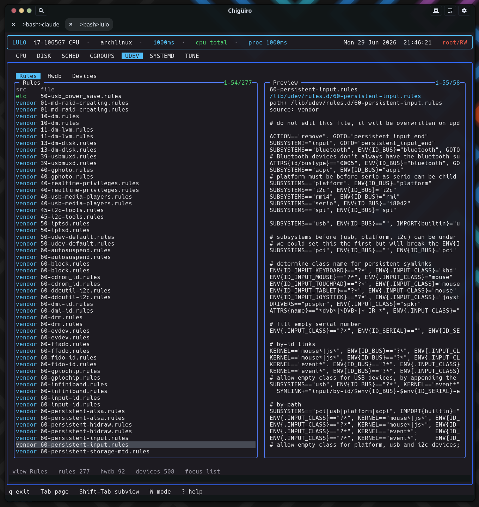

The UDEV page brings rule files, the hardware database, and live device records into one surface – and it does so entirely by reading the filesystem, including the resolved device state in /run/udev/data, with no libudev dependency.
UDEV is an inspection and configuration surface for device handling. Like the cgroups, systemd, and tune pages it runs on the client/daemon split: a backend thread requests a snapshot from lulod, which gathers the data and caches it (see Process Model & IPC).
| Subview | Purpose |
|---|---|
Rules |
Installed udev .rules files |
Hwdb |
Installed .hwdb hardware-database files |
Devices |
Live device records from udev’s runtime state |
Each view is a directory scan or file parse – there is no udevadm subprocess and no libudev linkage.
The Rules and Hwdb views are directory listings of their respective roots, filtered by filename suffix (.rules, .hwdb). Both show a two-column list:
| Column | Meaning |
|---|---|
src |
Source: /etc overrides (green) vs vendor (cyan) |
file |
File name |
Selecting a file previews a path / source header followed by a raw dump of the file. The two views share the same preview renderer, so a hwdb file reads exactly like a rule file – header plus contents. This makes the page a fast way to see how device naming, permissions, and properties are actually defined on this system across both vendor and local overrides.

The Devices view is the novel part. Instead of enumerating sysfs or calling libudev, it parses udev’s own resolved runtime database under /run/udev/data. Each file there is a per-device record that udev wrote after processing rules; Lulo reads it line by line, pulling out the subsystem, device node, and syspath.
| Column | Meaning |
|---|---|
subsystem |
Device subsystem (cyan) |
name |
Derived from devnode, then devpath, then the record filename |
devnode |
Device node path |
Selecting a device previews a header (path / subsystem / devnode / syspath) followed by the raw udev-db record, sorted by subsystem then name. Reading /run/udev/data directly is what lets the page show the resolved device state – the properties udev actually assigned – without a libudev dependency or a sysfs crawl.
UDEV uses the shared external-editor handoff, the same model as SCHED and SYSTEMD. Rule and hwdb files expose an edit path; pressing i opens it in $VISUAL / $EDITOR, and privileged writes commit through lulod-system’s atomic, allowlist-scoped edit protocol. The Devices view is not editable – the /run/udev/data records are runtime state, not user-authored config, so there is no edit path for them.
| What exists today | Not the main workflow yet |
|---|---|
| Browse rule and hwdb files | Rule creation / deletion as a TUI-first flow |
| Inspect live device records | High-level device action tooling |
| Edit rule and hwdb files | A full udevadm replacement |